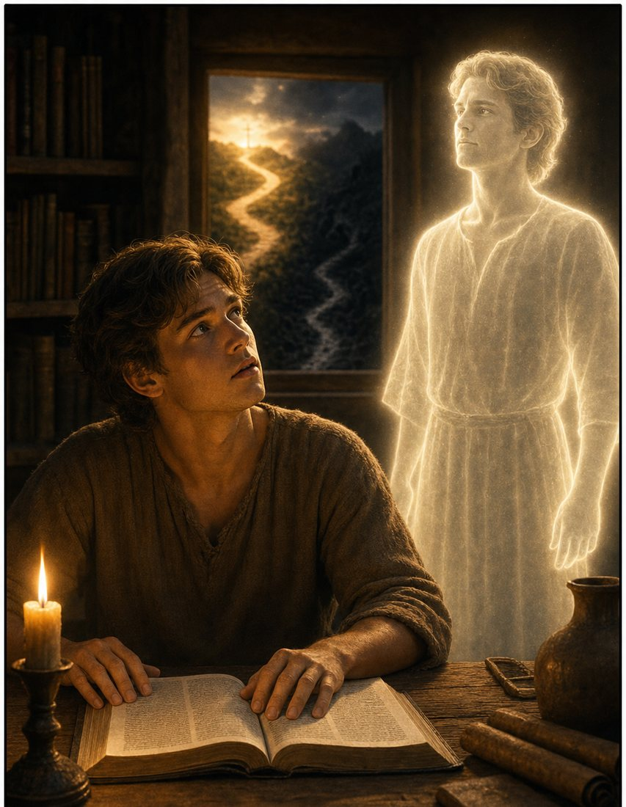
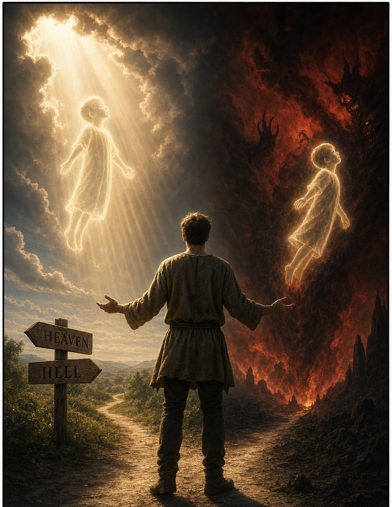
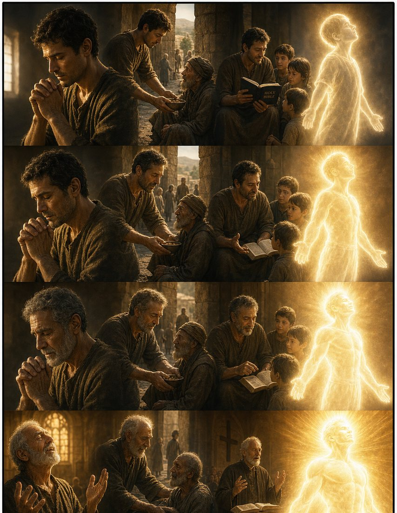
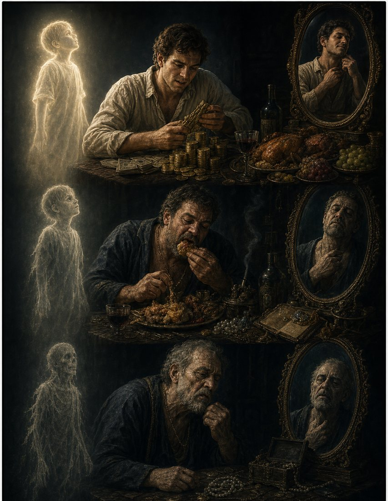
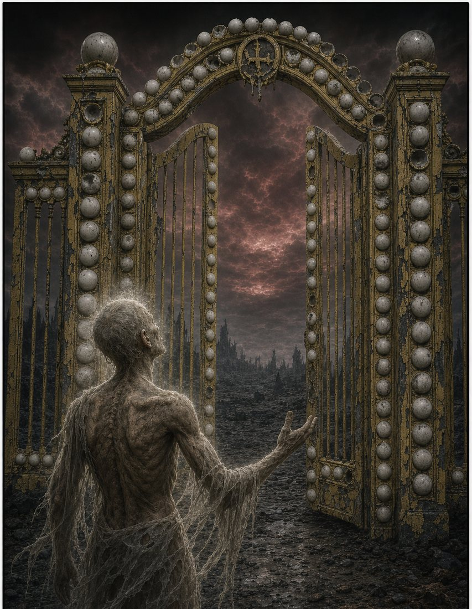

The epilogue to The Soul series.
I have spent this series making the case in analysis — the two decisions, the third thing, the team’s share, Spurgeon’s audit. Let me close it with a story instead. It is an allegory of two individuals. Both realize they have a soul. One wants his to be with God for eternity, worshiping and serving only Him. The other wants his soul for himself for eternity — not a trace of God, so that he himself can be on the throne, worshiping and serving only himself. The idea is inspired by Oscar Wilde’s The Picture of Dorian Gray — but here, the portrait is real. A life lived shapes the soul it becomes.
Panel 1 — A Life Begins
Every human life begins as a soul newly given — pristine, radiant, and unmarked. Before a single choice is made, the soul is a gift, formed and known by its Creator.
Psalm 139:13 — “For you formed my inward parts; you knitted me together in my mother’s womb.”
Panel 2 — He Becomes Self-Aware
Somewhere in childhood, a moment arrives. The child looks up and understands: I am. I exist. And something in me was made to last forever.
Ecclesiastes 3:11 — “He has put eternity into man’s heart.”
Panel 3 — He Learns of the Choice

As he grows, he learns that his eternal soul must go somewhere when this life ends. He learns that there are only two destinations — and only two masters he can serve.
Joshua 24:15 — “Choose this day whom you will serve.”
Panel 4 — The Soul Is Reserved

He chooses. Heaven, where God is on the throne and all exists to worship Him — or hell, where God is absent and he may live as though all exists for himself. From this moment his soul is reserved — though the narrow gate stands open until his final breath.
Matthew 7:13–14 — “Enter by the narrow gate…”
Panel 5 — The Soul Lived for God

The one who chose God lives for His kingdom — praying, serving, teaching, worshipping. Like the portrait of Dorian Gray, but true: his soul brightens. It grows strong, healthy, and radiant. Every act of faith prepares it for the glory that awaits.
2 Corinthians 4:16 — “Our inner self is being renewed day by day.”
Panel 6 — The Soul Lived for Self

The one who chose himself lives for pleasure, wealth, and vanity. Outwardly he appears intact. But his soul — like the hidden portrait — languishes. It thins, weakens, and grows tattered. In its own strange way, it too is being prepared for what awaits.
Mark 8:36 — “What does it profit a man to gain the whole world and forfeit his soul?”
Panel 7 — Ready for Heaven
When his life ends, his radiant soul stands before the Pearly Gates. Strong. Whole. Magnificent. Fully prepared for the eternity he was shaped for.
Revelation 21:21 — “The twelve gates were twelve pearls.”
Panel 8 — Ready for Hell

When his life ends, his tattered soul stands before the Plastic Gates — a cheap, peeling counterfeit of the glory he refused. He is fully prepared for this too. A lifetime made him the kind of soul that belongs in a place without God.
Matthew 25:46 — “And these will go away into eternal punishment.”
The Choice Is Yours
Reserved for Heaven: a soul that lives for God is strengthened for glory. Every act of faith prepares it for the eternity it was chosen for.
Reserved for Self: a soul that lives for itself is hollowed for the void. Every indulgence prepares it for the eternity it was chosen for.
Romans 10:9 — “If you confess with your mouth that Jesus is Lord and believe in your heart that God raised him from the dead, you will be saved.”
Comments